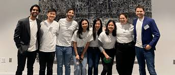
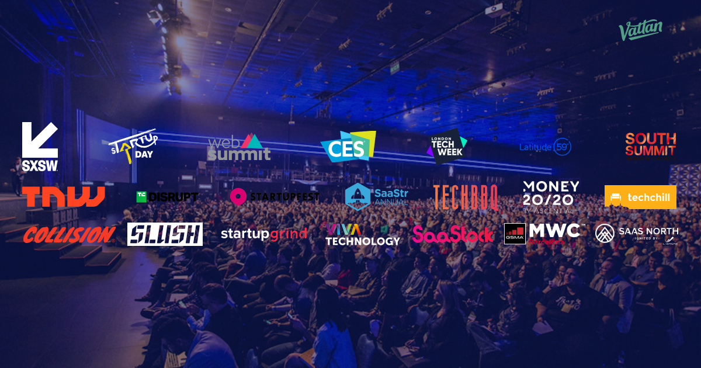
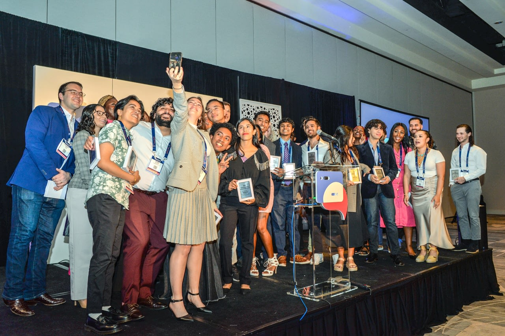
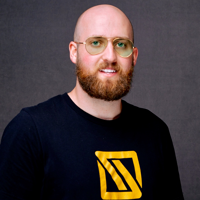

History
TechCon® North America was first held in 1996 in New Orleans, Louisiana.
It has since moved about the U.S., accommodating the growing number of delegates
and utility hosts. It often includes a regional facility tour of the sponsoring utility.
Most recently, the conference averaged 200 in attendance representing 11 various
countries and 30 interactive exhibiting corporations. TechCon North America offers
a vibrant and unparalleled learning experience with top-notch topics and speakers.



Mission

The mission of TechCon is to enhance member and association prosperity and professional growth through legislative representation, educational advancement, information, and networking opportunities.
"The purpose or purposes for which this corporation is formed shall be to promote the multi-family rental housing industry in the Denver metropolitan area, to seek improvements in the techniques of ownership and management, to establish and maintain high professional standards and sound business practices, and to work and cooperate with other organizations and individuals for the improvements and advancement of the multi-family housing industry.
Notable Past Speakers
Thomas Griffith
Product Owner - IT Glue

Thomas is a seasoned IT professional with over 7 years of experience in the industry. He started his journey as a Software Support Engineer before transitioning to the role of Solutions Engineer at IT Glue. Currently, he serves as the Product Owner, leveraging his deep understanding of IT teams environments and software stacks to create innovative solutions for IT service providers and internal IT teams. Thomas's expertise and insights make him a valuable speaker for those looking to enhance their IT operations.
Chris McNulty
Director of Product Marketing, Microsoft 365
Chris McNulty is Director of Product Marketing for Microsoft 365, Knowledge/Content Services, OneDrive, SharePoint, Stream, SharePoint Syntex and Microsoft Viva. Chris’s experience as CTO includes companies such as Dell and Quest Software. He was first recognized as a SharePoint MVP in 2013, and led the consulting practice at Knowledge Management Associates, a US based Microsoft Gold Partner. A frequent speaker at events around the globe, Chris is the author of the “SharePoint 2013 Consultant’s Handbook” among other works. Chris holds an MBA from Boston College in Investment Management and has over twenty years’ experience with John Hancock, State Street, GMO and Santander. He blogs at https://techcommunity.microsoft.com and co-hosts the Intrazone podcast at https://aka.ms/TheIntrazone
David Drever
Microsoft 365 MVP - Compliance and M365 Specialist
David is an Associate Director with Protiviti Canada and an 8-time Microsoft 365 Apps and Services MVP. For over 20 years, David has worked in a wide variety of areas in IT, ranging from Desktop\Server support to development in C++ and .NET technologies. During that period, David has added value to many clients in several sectors, including utilities, government, banking, and agriculture.
Pamela Benke
Senior Director, Product Marketing
Pamela Benke is a seasoned professional in the technology sector, with over two decades of extensive experience in enterprise automation. Currently serving as the Director of Product Marketing at KnowledgeLake, Pamela focuses on driving product marketing strategies and fostering market growth for AI powered, enterprise software solutions.
Her tenure at Appian and Blue Prism marked significant achievements in guiding companies with digital transformation strategies. Pamela's expertise has been pivotal in helping businesses reduce costs, enhance productivity, and embrace the future of work through automation and AI.
Chris Garty
Senior Product Manager at Microsoft
Chris Garty, a Senior Product Manager at Microsoft, has been instrumental in making application lifecycle management (ALM) easier within Power Automate. ALM encompasses the end-to-end lifecycle management of applications and automations, including aspects like governance, development, and maintenances